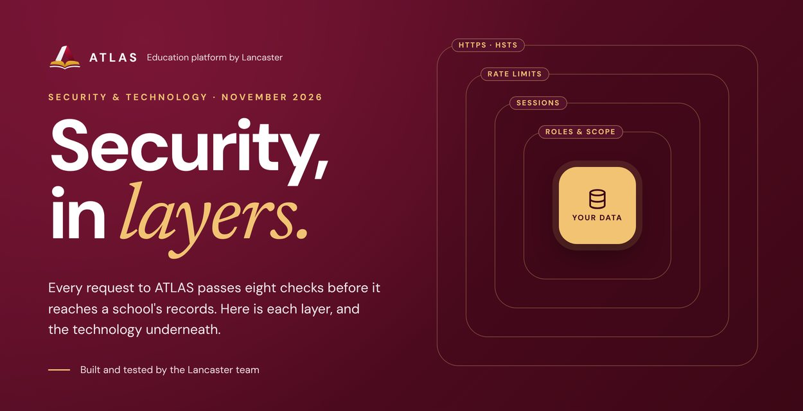
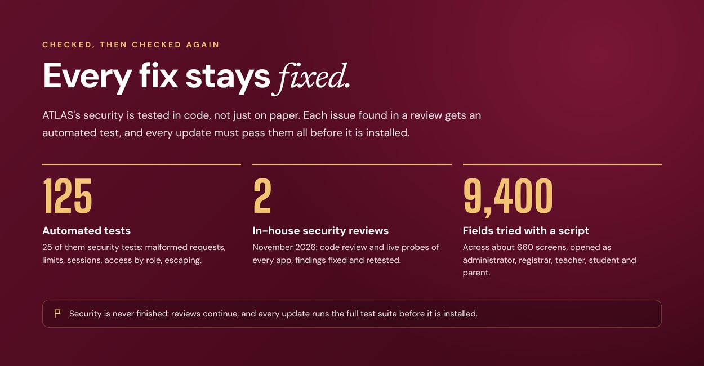
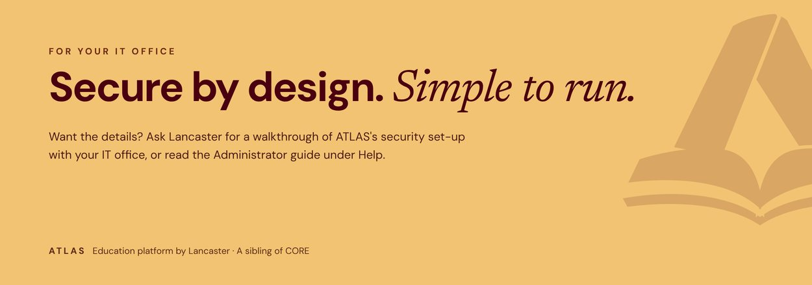

![Eight checks before anything reaches your data. 1, HTTPS only: every connection encrypted, HSTS for a year. 2, Address check: requests must be addressed to the school's ATLAS address; malformed ones get a 400. 3, Rate limits per person and per network address; past them, 429. 4, Same-site only: changes only as JSON from ATLAS's own pages; the cookie is never sent with another site's request. 5, Session: a 256-bit random token in a cookie scripts cannot read; idle sessions end after 8 hours by default. 6, Role and permission: each of 400 API routes states who may call it. 7, Scope: campus, class and family. 8, Business rules: whoever prepares or certifies a voucher cannot approve it; officers cannot change their own pay, leave or attendance. Then your school's records, with an audit trail.](email/s02.jpg)

![Passwords that are no use to a thief. ATLAS never stores a password: it keeps a salted, slow, one-way scrypt hash, then encrypts it with AES-256-GCM under a key kept outside the data. A copy of the data alone holds no hashes to crack. ATLAS sign-in: HttpOnly, SameSite=Strict, Secure cookies; the same answer in the same time whether or not a username exists; a password change ends every other session. Optional Keycloak single sign-on: OpenID Connect with PKCE, state and nonce; token signature, issuer, audience and expiry checked; accounts link only by a verified email; the school's own Keycloak rules apply, including two-step sign-in where it is on.](email/s04.jpg)


![A locked-down server on Amazon Web Services, set up from one CloudFormation template. Network: only ports 80 and 443; no SSH, administrators use AWS Session Manager. Disk: encrypted; the data folder and password key closed to other accounts. Instance: Ubuntu 24.04 LTS with automatic security updates; IMDSv2 required. Service: systemd sandbox, its own account, writes only to its data folder. Updates: every test runs first as an unprivileged account with no network, and the update installs only if all pass. Backups: nightly copy kept 30 days, daily disk snapshot with the last 7 kept.](email/s07.jpg)
![Built on the standard library. No web framework and no outside packages. Browser: plain JavaScript ES modules with no build step, HTML and CSS, seven web apps. Edge: Caddy for HTTPS and HSTS; optional Keycloak with OpenID Connect. Server: Node.js 22 LTS using node:http, node:crypto, node:fs and node:test. Data: a JSON data store with atomic saves, a file store, ready for PostgreSQL. Platform: Amazon EC2 by CloudFormation, Ubuntu 24.04 LTS with systemd, encrypted EBS. In numbers: 0 outside packages, about 30,000 lines, 400 API routes, 125 automated tests, 1 server.](email/s08.jpg)